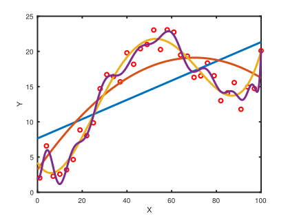
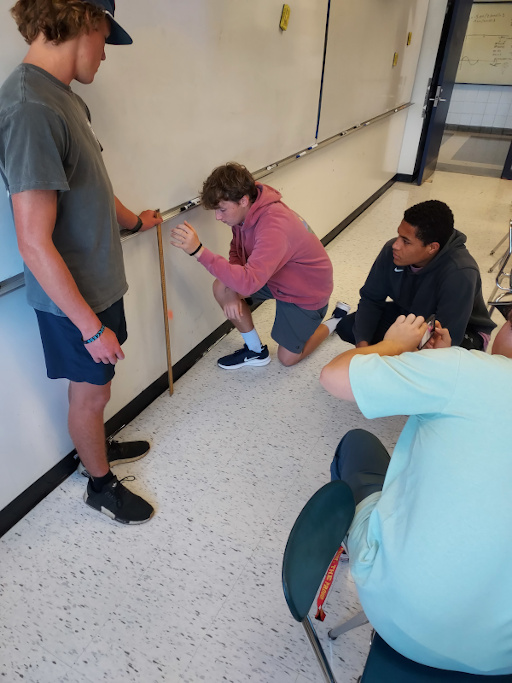
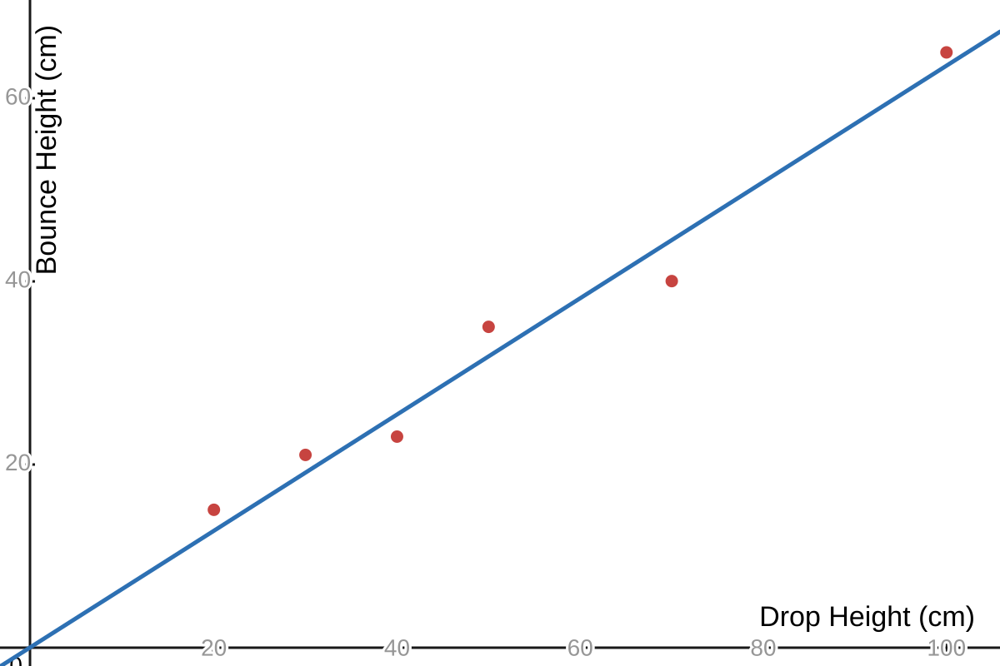
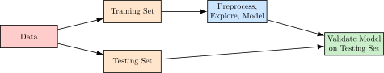
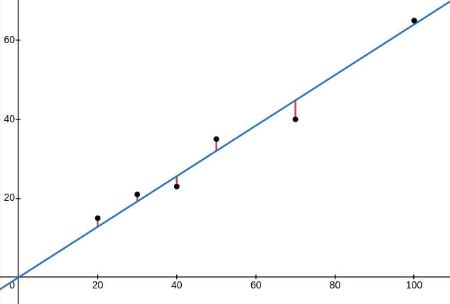
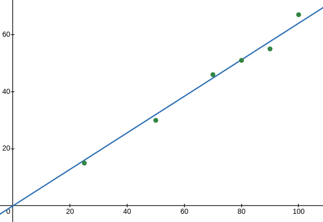
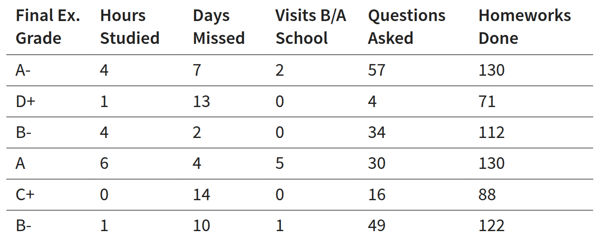
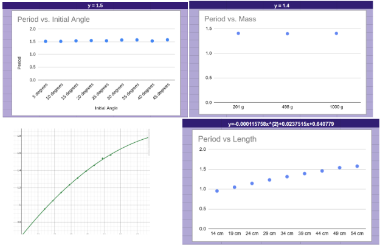
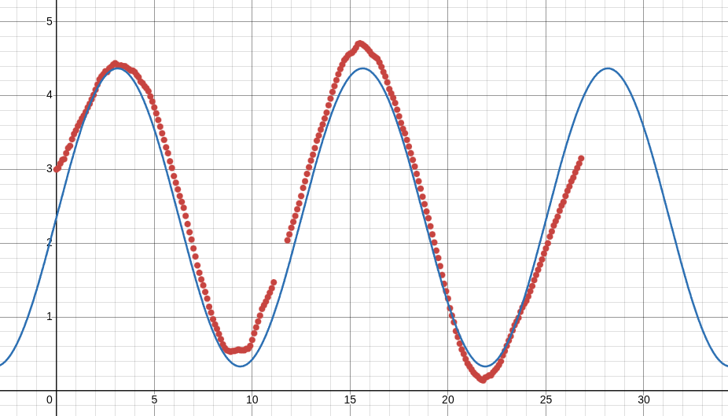

Regression by Hand

Jedediyah
Williams, PhD
jedediyah@gmail.com
How high does a bouncy ball bounce?
How high does a bouncy ball bounce?
| ↓ | Translate the question into a data problem |
When we drop a bouncy ball from rest at height \(h_{drop}\), what height \(h_{bounce}\) will it
reach on its first bounce?
How high does a bouncy ball bounce?
|
 |
How high does a bouncy ball bounce?
|
 |
How high does a bouncy ball bounce?
|
True relationship
\(Y = ? \)
Approximation
\(\hat{Y} = \hat{\beta}_{0} + \hat{\beta}_{1}X \) |
 |
How high does a bouncy ball bounce?
|
\[ \hat{Y} = \hat{\beta} X \]
\(\hat{\beta}\) is a model parameter: a tuneable value in our model
|
How high does a bouncy ball bounce?
|
The residual error between the observed data \((x_i, y_i)\) and the model
is:
\[ e_{i} = y_i - \hat{y}_i \]
where
\[ \hat{y}_i = \hat{\beta} x_{i} \]
|
 |
How high does a bouncy ball bounce?
|
The residual error between the observed data \((x_i, y_i)\) and the model
is:
\[ e_{i} = y_i - \hat{y}_i \]
The sum of squared error is the sum of squares $e_i^2$
\[ SSE = \sum_{i=1}^{n} e_{i}^{2}\]
|
|
Model Interpretation
What does the parameter in our model mean?
\( \hat{h}_{bounce} = \hat{\beta} h_{drop} \)
Model Interpretation
\( \hat{h}_{bounce} = \hat{\beta} h_{drop} \)
\(\hat{\beta}\) is the slope, \(\frac{h_{bounce}}{h_{drop}}\)
This is the ratio of bounce height to drop height
and means we predict \(h_{bounce}\) to be 64% of \(h_{drop}\)
and means we predict \(h_{bounce}\) to be 64% of \(h_{drop}\)
Model Validation
How can we verify that our model works,
or that it is useful?
or that it is useful?
Model Validation
Data Splitting

Model Validation
| Training Data | Testing Data |
 |
 |
Model Validation
Where we go from here

Multiple Linear Regression
$\hat{Y}=\hat{\beta}_0+\hat{\beta}_1 X_1 + \hat{\beta}_2 X_2 + \hat{\beta}_3 X_3+\dots$

Pendulum Exploration
$\hat{T}=\hat{\beta} \sqrt{L}$

Sinusoidal Model by Parameter-Tuning
$\hat{Y}=\hat{\beta}_0+\hat{\beta}_1 \sin(\hat{\beta}_2 X+\hat{\beta}_3)$

Model Regression in Python
$\hat{Y}=\hat{\beta}_0+\hat{\beta}_1 X+\hat{\beta}_2 X^2+\hat{\beta}_3 \sin(\hat{\beta}_4 X+\hat{\beta}_5)$